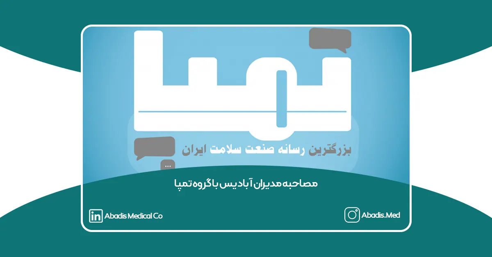

مصاحبه مدیران شرکت مخازن طبی آبادیس با گروه تمپا: چالشها و مطالبات صنعت تجهیرات پزشکی
چهارشنبه، ۱۲ دی ۱۴۰۳، شرکت مخازن طبی آبادیس میزبان تیم رسانهای گروه تمپا بود تا درباره مشکلات و چالشهای اساسی صنعت تجهیزات پزشکی ایران گفتوگویی صریح و صمیمی با مدیران این مجموعه داشته باشند. در این مصاحبه که توسط مجتبی خشامی انجام شد، نوید حسنعلی (رئیس هیئتمدیره) و علیرضا حسنعلی (مدیرعامل) به ارائه دیدگاهها و دغدغههای خود پرداختند.
مدیران این شرکت دانشبنیان که از فعالان پیشرو در زمینه تولید کیسه ساکشن یکبار مصرف هستند، در این گفتوگو به مشکلات ناشی از مطالبات معوقه شرکتهای تجهیزات پزشکی، چالشهای حذف ارز ترجیحی و همچنین نمایشگاهها و تشکلهای تجهیزات پزشکی پرداختند.
در شرایطی که بسیاری از شرکتهای تجهیزات پزشکی با مشکل وصول مطالبات خود دست و پنجه نرم میکنند، شرکت مخازن طبی آبادیس نهتنها این موضوع را بهعنوان یکی از اولویتهای خود قرار داده، بلکه با حمایت از یک کارزار جمعی سعی کرده است توجه عموم فعالان صنعت و نهادهای مسئول را به این موضوع جلب کند.
مدیران شرکت توضیح دادند که این روزها درگیر فعالیتهایی گسترده برای جلب توجه به مسئله مطالبات معوقه هستند. این فعالیتها شامل ارتباط با انجمنها، رسانهها و فعالیتهای مداوم در شبکههای اجتماعی است.
در این مصاحبه، مهندس نوید حسنعلی، رئیس هیئتمدیره شرکت مخازن طبی آبادیس، توضیحاتی درباره این کارزار و روند شکلگیری آن ارائه کرد. به گفته وی، این حرکت کاملاً مستقل و خودجوش و بدون وابستگی به جناحها و انجمنها آغاز شده است. تاکنون بیش از ۱۶۰۰ نفر این کارزار را امضا کردهاند و هدف آن رسیدن به ۲۰۰۰ امضا است. با تحقق این هدف، مطالبه مذکور بهصورت رسمی در دبیرخانه وزارت بهداشت ثبت خواهد شد و امکان پیگیری قانونی آن فراهم میشود.
مهندس حسنعلی تأکید کرد که مطالبات معوقه شرکتهای تجهیزات پزشکی یکی از موضوعات کلیدی است که بهطور مستقیم بر پایداری مالی این شرکتها و کیفیت خدمات آنها تأثیر میگذارد. وی گفت:
«انتظار داشتیم این کارزار از سوی تشکلهای مختلف تجهیزات پزشکی شکل بگیرد و رسانهای شود. اما با وجود عدم حمایت اولیه، این حرکت بهصورت خودجوش و با تلاشهای مستمر ما و همراهی برخی از فعالان صنعت آغاز شد. خوشبختانه پس از شروع کارزار، تعدادی از انجمنها و تشکلها نیز با ما تماس گرفتند و حمایت خود را اعلام کردند.»
رئیس هیئتمدیره مخازن طبی آبادیس، با اشاره به افزایش قابل توجه مطالبات انباشته در این صنعت، از تمامی فعالان خواست تا با امضای این کارزار و اطلاعرسانی در مورد آن، سهمی در رفع این چالش مهم داشته باشند. وی افزود:
«امضای این کارزار اهمیت زیادی دارد، چرا که نشاندهنده خواست جمعی صنف تجهیزات پزشکی برای رسیدگی به این معضل است. امیدواریم با مشارکت گستردهتر، این حرکت به یک مطالبه جدی و تأثیرگذار تبدیل شود.»

در بخش دیگری از مصاحبه، علیرضا حسنعلی به چالشها و مشکلات جدی در صنعت تجهیزات پزشکی اشاره کرد. وی با ابراز نگرانی از شرایط فعلی، توضیح داد:
«متأسفانه در سالهای اخیر بسیاری از شرکتها فعالیت خود را متوقف کردهاند. این موضوع نتیجه تصمیمات اشتباهی است که در حوزه مطالبات شرکتهای تجهیزات پزشکی اتخاذ شده است. ما همچنان در حال فعالیت هستیم، اما این کار تنها به دلیل تعهد به منافع ملی و علاقه به ایران و صنعت تجهیزات پزشکی است. با این حال، باید تأکید کنم که به عنوان یک سرمایهگذار و فعال در این حوزه، انتظار داریم منافع شخصیمان نیز تأمین شود.»
وی در ادامه افزود:
«ما به امید آمدن روزهای بهتر در حال تلاش هستیم، اما برای خودمان یک نقطه تابآوری مشخص کردهایم. اگر شرایط از حد قابلتحمل فراتر رود و مطالبات ما به سطح غیرقابل قبولی برسد، مجبور خواهیم شد تصمیمات جدیتری بگیریم و حتی شاید به فکر خروج از بازار باشیم. با این حال، فعلاً با کمکهای جزئی و پراکنده دولت و پرداختیهای مویرگی، توانستهایم ادامه دهیم.»
علیرضا حسنعلی همچنین درباره مشکلات کلان اقتصادی گفت:
«وقتی ارزش پول ملی ما در عرض سه یا چهار ماه حدود ۲۰ درصد کاهش پیدا میکند و صنایع انرژی مانند برق به درستی تأمین نمیشوند، شرایط برای تولیدکنندگان بسیار دشوار میشود. از سوی دیگر، وجود اختلافات و ناهماهنگیها در میان خودمان نیز به این مشکلات دامن میزند. با تمام این سختیها، فعلاً زندهایم و همچنان با انگیزه به تلاش ادامه میدهیم تا به نقطه بحرانی و خط قرمز خود نرسیم.»
در ادامه مصاحبه، مهندس علیرضا حسنعلی مدیرعامل شرکت مخازن طبی آبادیس، از عملکرد برخی انجمنها و اتحادیهها ابراز نارضایتی کرد. به گفته او، این نهادها تاکنون توجه کافی به مسئله مطالبات معوقه نداشتهاند و به جای پرداختن به این موضوع حیاتی، بیشتر درگیر مسائل حاشیهای و اختلافات داخلی بودهاند. وی گفت:
«تقابل بین انجمنها آنقدر زیاد است که گاهی منافع صنف دیده نمیشود. مطالبات معوقه یک موضوع مشترک بین انجمنها است و باید با گفتمان و همکاری به آن رسیدگی کنند.»
وی در ادامه تأکید کرد که میزان دعوا و چالش میان انجمنها باعث شده است از اشتراکات و اهداف مشترک صنف فاصله بگیرند. این در حالی است که موضوع مطالبات معوقه یکی از چالشهای اساسی این صنعت به شمار میآید و نیازمند همکاری و هماهنگی بیشتری میان تمامی نهادهای مرتبط است.
یکی دیگر از موضوعات مطرح شده در این مصاحبه، حذف ارز ترجیحی و تأثیرات آن بر صنعت تجهیزات پزشکی بود. مهندس علیرضا حسنعلی در پاسخ به این پرسش که آیا بهعنوان یک تولیدکننده موافق یا مخالف این اقدام هستید، توضیح داد:
«بهعنوان یک تولیدکننده، بیشک از منظر حفظ منافع شخصی با حذف ارز ترجیحی موافق هستم. با این حال، در این موضوع نباید صرفاً به منافع فردی توجه شود، بلکه منافع ملی، رفاه مردم و سلامت بیماران باید در اولویت قرار گیرد. حذف ارز ترجیحی نیازمند تصمیمگیریهای بلندمدت و پایبندی دولت به اجرای آن است. نظارت دقیق بر زنجیره تأمین تجهیزات پزشکی از سوی دولت امری ضروری است تا اطمینان حاصل شود که محصولات حیاتی و ضروری با کیفیت مناسب و قیمت منصفانه به دست مردم برسند.»
وی اضافه کرد که نوسانات ارزی و تأمین مواد اولیه همچنان از بزرگترین چالشهای تولیدکنندگان تجهیزات پزشکی در ایران است و رفع این مشکلات نیازمند همکاری دولت و انجمنهای مرتبط است.
در بخش دیگری از مصاحبه، مهندس نوید حسنعلی به موضوع نمایشگاههای تجهیزات پزشکی پرداخت و توضیحاتی درباره دو نمایشگاه ایران هلث و ایران مد ارائه داد. او با اشاره به اینکه هرکدام از این رویدادها گروه مخاطبان و دستاوردهای خاص خود را دارند، گفت:
«در دو سال اخیر، شاهد برگزاری دو نمایشگاه مجزا در حوزه تجهیزات پزشکی بودهایم که هرکدام توانستهاند تأثیرات مثبت و منافع خاصی را برای اکوسیستم تجهیزات پزشکی کشور به همراه داشته باشند. با این حال، شرکت آبادیس با توجه به تصمیمات بازاریابی و فروش خود و ارزیابی بازگشت سرمایه، تصمیم گرفت که در هیچیک از این نمایشگاهها شرکت نکند. از دید ما، هزینههای مشارکت در این رویدادها با توجه به بازگشت حاصل از آن، برای شرکت ما توجیه اقتصادی نداشته است.»
وی در ادامه افزود:
«ما به هیچ عنوان منکر اهمیت و ارزش این نمایشگاهها نیستیم و معتقدیم رقابت میان این دو رویداد میتواند در نهایت به نفع صنعت تجهیزات پزشکی کشور باشد.»
در پایان، مدیران شرکت مخازن طبی آبادیس از تمامی فعالان صنعت تجهیزات پزشکی خواستند تا با امضای کارزار و اطلاعرسانی درباره آن، به حل مشکل مطالبات معوقه کمک کنند. این کارزار فرصتی است تا صدای جمعی صنف تجهیزات پزشکی به گوش مسئولان برسد و گامی مؤثر در مسیر حل این چالش برداشته شود.
🔗 برای امضای کارزار و حمایت از این حرکت، کلیک کنید.
آنها همچنین از رسانهها و نهادهای مختلف درخواست کردند که با حمایت و پوشش خبری این کارزار، در رفع یکی از بزرگترین چالشهای این صنعت نقشی مؤثر ایفا کنند.